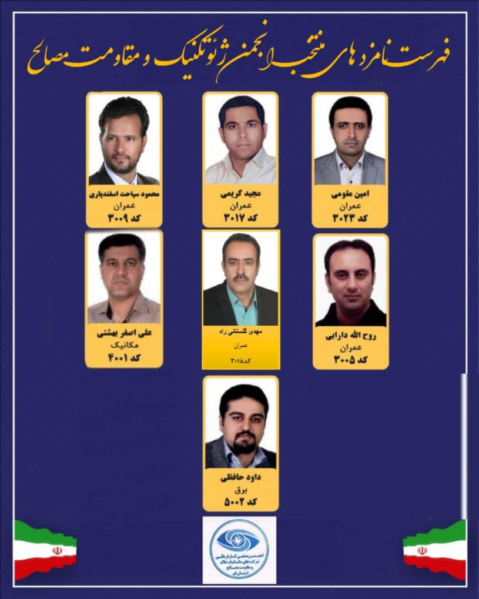

سهم من از تغییر، رای من است


نهمین دوره انتخابات هیأت مدیره نظام مهندسی نهم مهرماه سال جاری (1400) برگزار میشود. انتخابات پیشرو به نوعی انتخاب شایستگان در بخش ساختمان است. و کسانی که بتوانند به عضویت هیئت مدیره سازمانهای استانی برگزیده شوند، برای سه سال امور مهندسی و مهندسان ساختمان را در دست خواهند گرفت.
حدود 600 هزار نفر در سراسر کشور عضو سازمانهای نظام مهندسی هستند (منبع: مدیر روابط عمومی سازمان نظام مهندسی ساختمان کشور). و تمام اعضا چه عضو عادی چه کسانی که پروانه اشتغال دارند به شرط پرداخت حق عضویت و اعتبارکارت عضویت میتوانند در انتخابات شرکت کنند. با این حال در چند دوره گذشته مشارکت مهندسان در انتخابات هیأت مدیره نظام مهندسی استانها حداقلی بود و نمیشود گفت که انتخابات دورههای پیشین آرای مهندسان را نمایندگی میکرده است
همچنین بسیاری از اعضای عادی و حتی کسانی که پروانه اشتغال دارند از قوانین نظام مهندسی و کنترل ساختمان بیاطلاع هستند و این موضوع سبب شده برخی از کاندیداها وعدههایی غیرعملی که تنها مصارف انتخاباتی دارد به مهندسان بدهند. شاید در آستانه انتخابات، مرور بندهای ماده 15 قانون نظام مهندسی که اهم وظایف و اختیارات هیأت مدیره در آن آمده خالی از لطف نباشد
"We have the power to make a difference. But we need to VOTE."
ما قدرت ایجاد تغییر و تحول را داریم. اما نیازه که این قدرت رو با رای دادن خود اعمال کنیم
اختیار اول
برنامه ريزي در جهت تقويت و توسعه فرهنگ و ارزشهاي اسلامي در معماري و شهرسازي
اختیار دوم
برنامه ريزي به منظور رشد و اعتلاي حرفه هاي مهندسي ساختمان و مشاغل مرتبط با آن
اختیار سوم
ارتقاي دانش فني و كيفيت كار شاغلان در بخشهاي ساختمان و شهرسازي از طريق ايجاد پايگاه هاي علمي، فني، آموزش و انتشارات
اختیار چهارم
همكاري با مراجع مسئول در امر كنترل ساختمان از قبيل اجراي دقيق صحيح مقررات ملي ساختمان و ضوابط طرحهاي جامع و تفصيلي و هادي شهر توسط اعضاي سازمان حسب درخواست
اختیار پنجم
نظارت بر حسن انجام خدمات مهندسي توسط اشخاص حقيقي و حقوقي در طرحها و فعاليتهاي غيردولتي در حوزه استان و تعقيب متخلفان از طريق مراجع قانوني ذيصلاح
اختیار ششم
مشاركت در امر ارزشيابي و تعيين صلاحيت و ظرفيت اشتغال به كار شاغلان در امور فني مربوط به فعاليتهاي حوزه هاي مشمول اين قانون
کمك به ارتقاي كيفيت طرحهاي ساختماني، عمراني و شهرسازي در محدوده استان و ارائه گزارش بر حسب درخواست، شركت در كميسيونها و شوراهاي تصميم گيري در مورد اينگونه طرحها و همكاري با وزارت مسكن و شهرسازي و شهرداريها در زمينه كنترل ساختمان و اجراي طرحهاي ياد شده با استفاده از خدمات اعضاي سازمان استان
تنظيم روابط بين صاحبان حرفه هاي مهندسي ساختمان و كارفرمايان و كمك به مراجع مسئول در بخش ساختمان و شهرسازي در زمينه ارجاع مناسب كارها به صاحبان صلاحيت و جلوگيري از مداخله اشخاص فاقد صلاحيت در امور
فني
...
..
كمك به ترويج اصول صحيح مهندسي و معماري و همكاري با وزارت مسكن و شهرسازي در زمينه تدوين، اجرا و كنترل مقررات ملي ساختمان و استانداردها و معيارها
كمك به ارتقاي كيفيت طرحهاي دفاع از حقوق اجتماعي و حيثيت حرفه اي اعضا و تشويق و حمايت از فعاليتهاي با ارزش و برگزاري مسابقات حرفه اي و تخصصي و معرفي طرحهاي ارزشمند
ارائه خدمات كارشناسي فني به مراجع قضايي و قبول داوري در اختلافاتي كه داراي ماهيت فني است
همكاري با مراجع استان در هنگان بروز سوانح و بلاياي طبيعي
...
تأييد ترازنامه سازمان نظام مهندسی استان و ارائه آن به مجمع عمومي
عضويت در كمسيونهاي حل اختلاف مالياتي در رسيدگي و تشخيص ماليات فني و مهندسي اعضاء سازمان
ارزش واقعی خدمات فنی - مهندسی
خدمات مهندسین، اغلب از آئین نامه هایی بین المللی الهام گرفته، و عرضه می شود. ارزش گذاری این خدماتی که بر اساس ضوابط بین المللی ارائه می شود، می تواند با الهام گیری از ضوابط بین المللی نیز ارزش گذاری گردد. به راستی کارفرما چند درصد از بودجه پروژه خود را هزینه دریافت خدمات مهندسی می کند؟
اگر در فلسفه نیاز انسان ها به اقامتگاه امن که بواقع بعد از نیاز به سلامت در اولویت هر شخصی است، به مسئله نگریسته شود، ممکن است به ارزش و سودمندی خدمات فنی مهندسی ارائه شده بیشتر نزدیک شد. درخواست ابتدایی مهندسین عضو نظام مهندسی قم، سیاست گذاری با رویکردی مهندسی و عالمانه به این بخش از وظایف هیات مدیره می باشد. به گونه ای که از حداکثر توان و اختیارات خود استفاده کرده تا مهندسان به ارزش واقعی و مطابق با وضعیت اقتصادی موجود دست پیدا کنند. این مهم در تقویت حس اعتماد بنفس و ارتقای کرامت مهندسان نیز تاثیر بی بدیلی دارد.
Mobirise free software - Read more